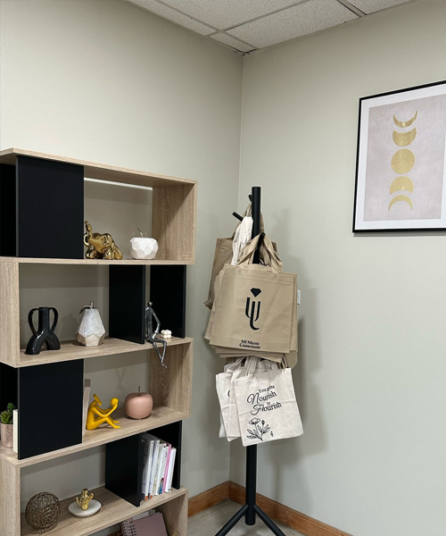
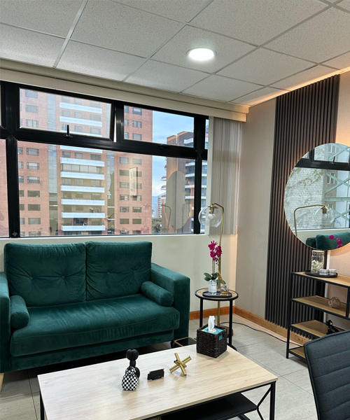
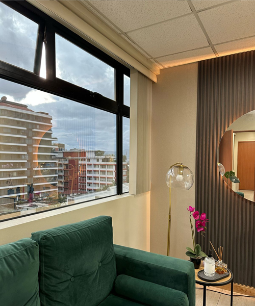
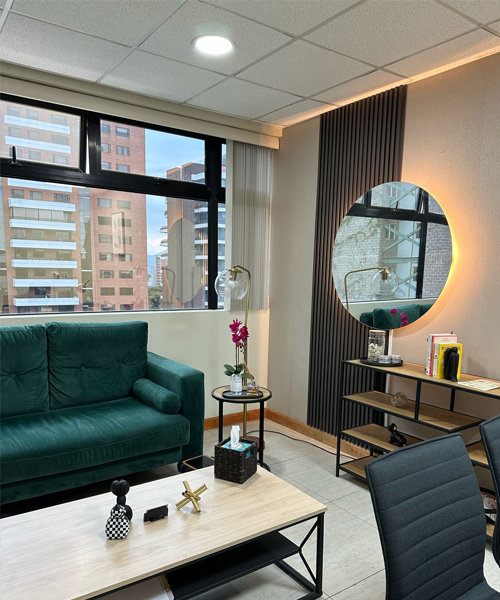
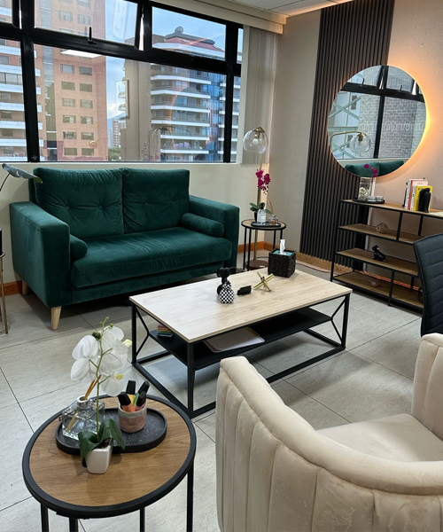
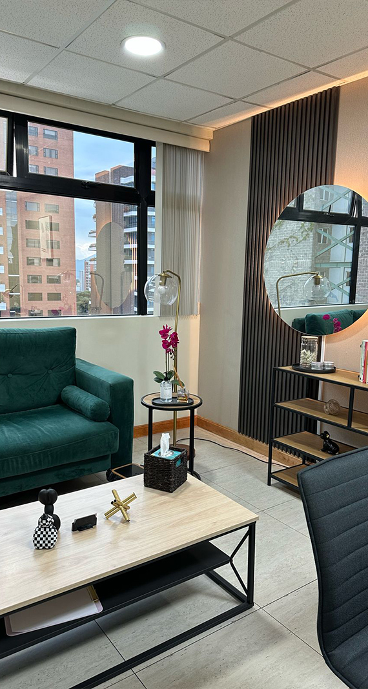
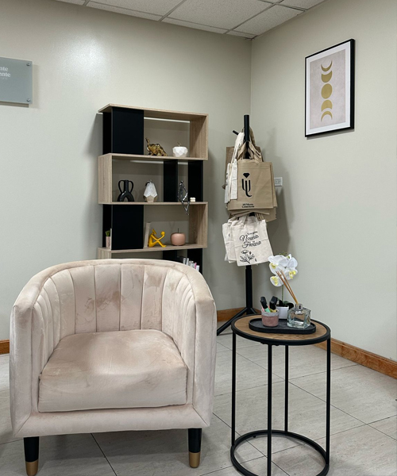
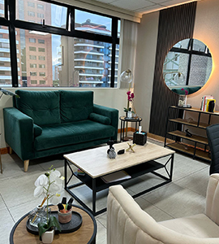

Marsha Linehan
Steven C. Hayes
Reflexión compartida
Nuestra misión es promover la conciencia sobre la importancia de la salud mental mediante enfoques basados en evidencia, Nos comprometemos a brindar a la población guatemalteca recursos accesibles para el cuidado integral de su salud mental, ofreciendo intervenciones que incluyen psicoterapia, talleres, retos, clubes de lectura y journaling, capacitaciones, grupos terapéuticos y entrenamientos en habilidades, con el fin de desarrollar la flexibilidad psicológica y fomentar aceptación y un compromiso auténtico con el cambio. A través de diferentes enfoques, se busca que las personas aprendan a regular sus emociones y a responder de manera más efectiva al malestar, cultivando en cada interacción una presencia en el aquí y ahora que fortalece la autenticidad en sus vínculos y promueve una relación significativa consigo mismas y con los demás. Así, se transforma el malestar en una oportunidad para vivir de forma plena y alineada con los valores personales, impulsando el cambio mediante la aceptación, el compromiso y la conexión genuina.

A través de diferentes enfoques, se explora la experiencia personal en relación con el entorno y valores individuales, facilitando la toma de decisiones, la implementación de cambios significativos, promoviendo el crecimiento personal y trabajando de manera colaborativa para alcanzar un bienestar integral.
Saber más
A través de un enfoque contextual, fomentamos la aceptación emocional y el cambio conductual de la pareja; por medio de la compresión y aceptación de las diferencias entre cada miembro con la finalidad de fomentar intimidad y conexión.
Saber másDiseñamos retos y talleres específicos para empresas y grupos, brindando herramientas efectivas que fomentan el crecimiento personal y profesional, mejorando el clima laboral y la dinámica grupal.
saber más
Creamos un espacio de lectura y escritura terapéutica, donde a través de la lectura consciente y la escritura reflexiva, los participantes encuentran formas de liberar el estrés y conectar con su bienestar emocional.
Saber más
Promovemos el acceso a la salud mental con programas de tarifa social, ofreciendo terapia y apoyo psicológico a aquellos que más lo necesitan, para todos aquellos que están comprometidos con mejorar su bienestar integral.
Saber más
Ofrecemos un espacio en donde los participantes desarrollan flexibilidad psicológica, fortalecen relaciones, regulan emociones y trabajan en la aceptación y el cambio. A través del apoyo grupal y técnicas basadas en valores, promovemos bienestar y crecimiento personal en un espacio seguro.
Saber más

En Mi Mente Consciente, combinamos el conocimiento técnico con un enfoque empático y personalizado, garantizando que cada proceso terapéutico sea una experiencia única, adaptada a las necesidades de cada persona. Nuestro equipo de profesionales está comprometido en acompañarte a lo largo de tu camino hacia el bienestar, trabajando de manera integral para que logres una vida más consciente, equilibrada y alineada con tus valores más profundos.
Los enfoques contextuales en psicoterapia, como ACT (Terapia de Aceptación y Compromiso), DBT (Terapia Dialéctico Conductual), FAP (Psicoterapia Analítica Funcional) e IBCT (Terapia Conductual Integrativa de Pareja), se centran en entender y modificar la interacción entre las personas y sus contextos. Estos enfoques buscan mejorar la flexibilidad psicológica, la regulación emocional y las relaciones interpersonales. Cada uno promueve el cambio en las conductas y pensamientos que dificultan el bienestar, mientras fomenta la aceptación de las experiencias internas difíciles y el enfoque en valores y metas significativas.
La psicotraumatología es una rama de la psicología que estudia y trata los efectos de un trauma psicológico en una persona o grupo social. Objetivo Investigar los factores que causan el trauma, Analizar las reacciones de crisis, Evaluar el impacto del trauma en la víctima, Tratar los efectos del trauma, Prevenir el trauma.
Parten de la base de que hay una interacción entre pensamientos, emociones y conducta. Consideran que los pensamientos (cogniciones) son un aspecto esencial en la aparición de problemas psicológicos y, por consiguiente, su objetivo es el cambio de los pensamientos, diálogo interno o cogniciones origen de los trastornos emocionales. Se enfatiza el elemento didáctico y se enseña al cliente habilidades de pensamiento, pero también de conducta, que le servirán para afrontar y superar sus problemas emocionales.
Soy psicóloga clínica, analista de conducta y psicoterapeuta contextual de adultos y parejas. Mi enfoque y experiencia profesional se fundamentan en el análisis conductual y contextual de cada caso, y a través de herramientas prácticas y funcionales apoyo el desarrollo de habilidades intrapersonales e interpersonales que fomenten la flexibilidad psicológica.
En mi práctica, la relación terapéutica es el núcleo y motor del cambio, y me comprometo a estar al servicio del consultante mediante una presencia genuina y comprometida en cada sesión. considero que el encuentro en el aquí y ahora posibilita una conexión auténtica y transformadora, creando un espacio seguro y propicio para la apertura, el crecimiento y la exploración de patrones relacionales y conductuales.
Escucho activamente las necesidades individuales para adaptar el proceso terapéutico a la experiencia única de cada persona, trabajando de forma colaborativa y flexible en cada paso del camino. Mi objetivo es acompañarte en la construcción de una vida con significado, promoviendo la consciencia del presente y su impacto en el futuro, y fortaleciendo tu capacidad para tomar decisiones que te acerquen a lo verdaderamente importante, creando así un camino en el que convivan la validación emocional, la aceptación, la tolerancia al malestar, la efectividad interpersonal, la autocompasión y otras habilidades para la vida.
Terapia de Aceptación y Compromiso (ACT)
Terapia Dialéctico Conductual (DBT)
Terapia Conductual Integrativa de Pareja (IBCT)Terapia Racional Emotivo Conductual (TREC)
Terapia Racional Emotivo Conductual (TREC)
Psicoterapia del Bienestar EmocionalTerapia de Conducta

Trastorno Límite de personalidad
Trastornos del estado de ánimo
Autoestima y sus componentes
Gestión y regulación emocional
Dependencia emocional
Inteligencia emocional
Problemáticas del día a día
Problemas laborales
Problemas de conducta
Problemas de conducta
Habilidades sociales
Conflictos de pareja
Terapia de pareja
Gestión del estrés
Procrastinación
Autosabotaje
Infidelidad
Rupturas
Apego
Duelo
Entre otros
Magister en Terapias de Tercera Generación
Magister en Terapias de Tercera Generación
Magister en Terapias de Tercera Generación
Magister en Terapias de Tercera Generación
Magister en Psicopedagogía Social, Laboral y Educativa
Certificación DBT Estándar avalado por Behavioral Tech
Certificación en Terapia Conductual Integrativa de pareja
Certificación en Terapia Analítico funcional
Saber más
